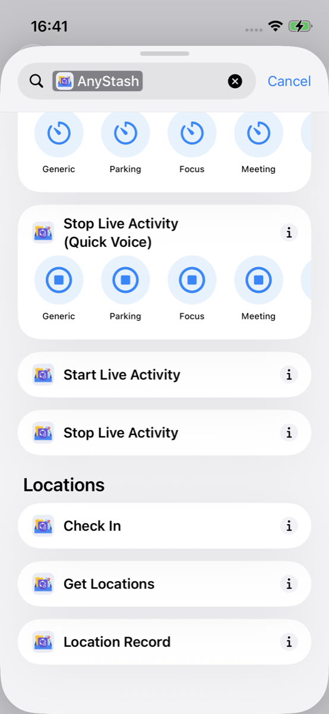
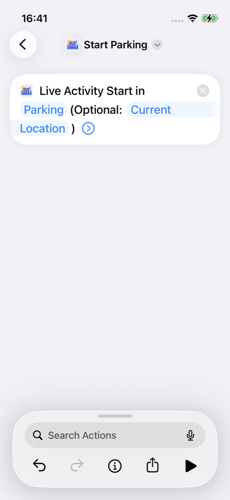
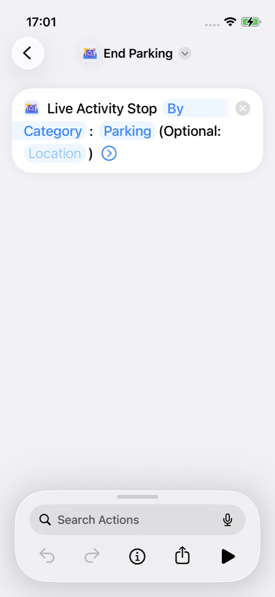
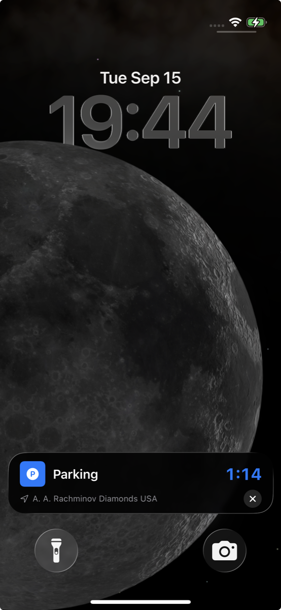
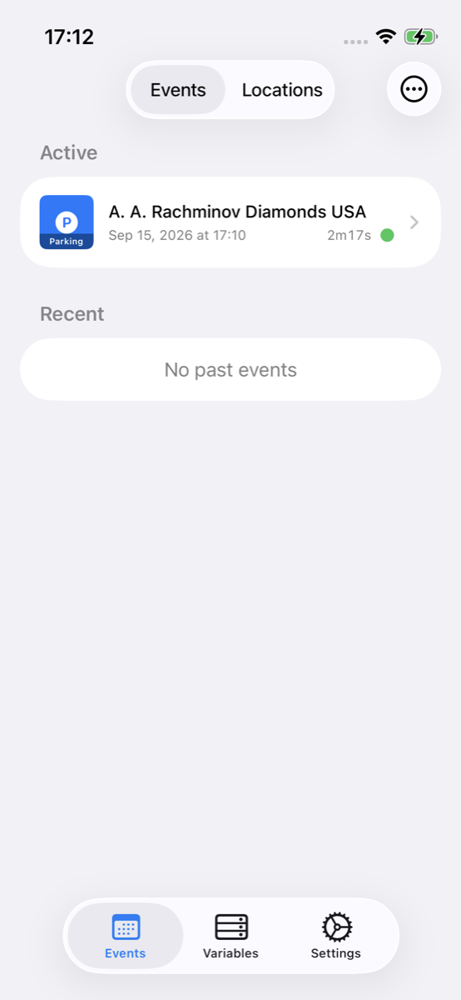
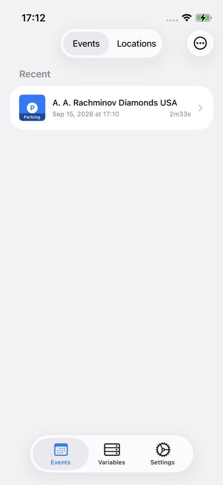
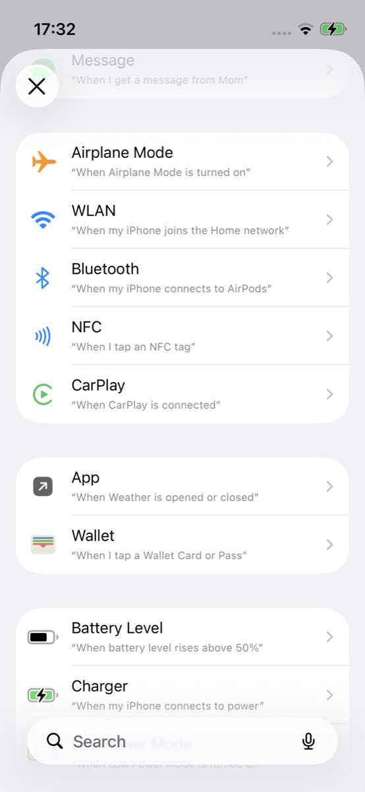
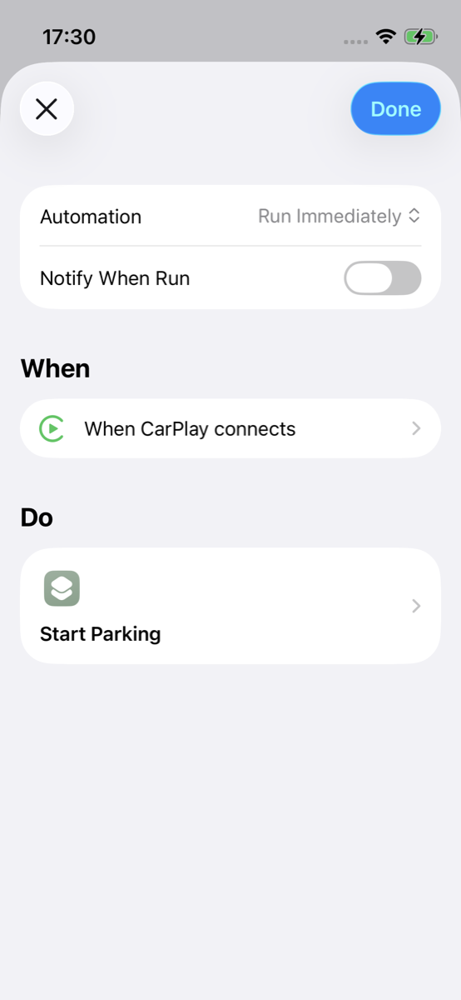
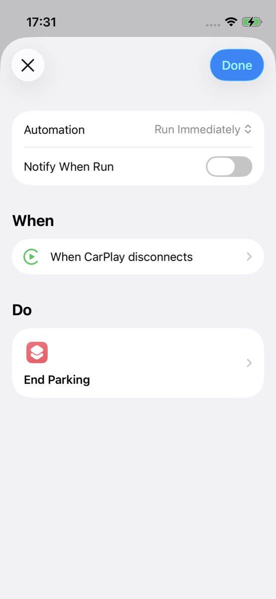

Parking session
What you’ll build
Two shortcuts: Start Parking (Live Activity + Event Session) and End Parking. You’ll run them by hand, confirm the session under Events in AnyStash, then attach those same shortcuts to system Automations—for example When CarPlay connects / disconnects (or car Bluetooth if CarPlay isn’t available).
This is a timed parking session on the Lock Screen and Dynamic Island with history in the app—not only a parked-car pin in Maps, and not a calendar appointment.
Add Shortcut
Or rebuild the same actions below. After you import, the shortcuts are not added to Automations automatically—see Add to an Automation.
Build it yourself
-
In the Shortcuts app, create a new shortcut. Search AnyStash and add Start Live Activity.

Add Start Live Activity from AnyStash -
Configure the action (parking essentials first):
- Category: Parking
-
Location (pick one)—core for parking:
- Recommended: set the optional Location parameter to Shortcuts’ Current Location (system variable). Does not require AnyStash location permission.
- Or turn on Use Current Location (If Already Allowed). Shortcuts never shows a permission dialog—AnyStash must already have Location (When In Use) (AnyStash → Settings → Permissions, or grant in the app). If access is missing, the action still succeeds but skips location.
- Everything else: leave the defaults. Save as Event Session is On by default (so the session appears under Events). You do not need to set a Timer unless you want a countdown.

Category Parking; Location = Current Location (or Use Current Location); other fields left at defaults -
Create a second shortcut named like End Parking: add Stop Live Activity (do not run it yet).

Add Stop Live Activity for End Parking
Try it
Run the shortcuts you built (or imported). This is where you confirm the Live Activity—not while configuring parameters above.
-
Run Start Parking. Confirm the Live Activity appears on the Lock Screen or Dynamic Island (timer / title). This is the in-progress parking surface, separate from the Events list in the app.

Parking Live Activity after start (Lock Screen / Dynamic Island) -
Run End Parking. The Live Activity should dismiss.
View in the app
AnyStash is for reviewing what Shortcuts already created—you do not need to start or build the session inside the app for this example.
-
After Start Parking, open AnyStash → Events and open the in-progress Parking session (requires Save as Event Session On).

Events — view in-progress Parking session -
After End Parking, return to Events and open the finished session in history.

Events — view finished session
Optional later: Shortcuts can also Check In a location onto a session—see Concepts. This guide does not cover creating sessions from the app UI.
Add to an Automation
Real parking flows usually start or stop without opening Shortcuts by hand. A common pair: When CarPlay connects → Start Parking; When CarPlay disconnects → End Parking. If your car doesn’t support CarPlay, use Bluetooth connects / disconnects the same way.
Important: Sharing or importing a shortcut only adds it to your Shortcuts library. iOS does not create an Automation for you. Open Shortcuts → Automation and create personal Automations yourself. You can Run Shortcut (your imported or newly built Start/End Parking) or add AnyStash’s Start Live Activity / Stop Live Activity actions directly.
-
In Shortcuts, open the Automation tab → New Automation.

New personal Automation -
Pick a trigger—recommended: CarPlay (you’ll use connects for one Automation and disconnects for the other). No CarPlay? Use car Bluetooth connects / disconnects instead. Triggers vary by iOS version and permissions.
-
Create two Automations and add what should run:
- When CarPlay connects → start parking
- When CarPlay disconnects → end parking
For each one, either:
- Add Run Shortcut, then pick the Start Parking or End Parking shortcut you just imported or built; or
- Skip the wrapper and add AnyStash’s actions directly— Start Live Activity or Stop Live Activity—with the same settings as in Build it yourself (for example Category = Parking).
Without CarPlay, map the same pairing to Bluetooth connects → start and Bluetooth disconnects → end.

When CarPlay connects → Run Shortcut → Start Parking 
When CarPlay disconnects → Run Shortcut → End Parking Why “Run Shortcut”?
When you first create an Automation, iOS may offer use an existing shortcut. After it’s created, that picker isn’t available the same way—to attach a library shortcut, use Add Action → Run Shortcut, then choose yours. AnyStash actions like Start Live Activity can still be added directly. Screenshots follow this edit path.
-
Optionally turn off “Ask Before Running” if iOS allows it for that trigger. If the Automation does not fire (permissions, CarPlay, or Bluetooth), you can still run the same shortcuts manually.
Next
- Concepts — Live Activity vs Event Session, Free daily limits
- Global variables example — stash a focus tag across shortcuts
- All examples
References
- Add automations to Shortcuts on iPhone or iPad — Apple Shortcuts User Guide